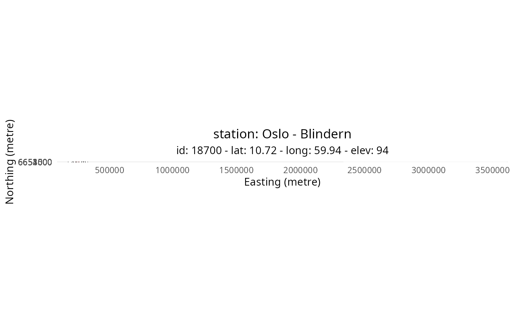

Add two buffers on a map to assess the area of same land cover type.
add_buffer(g = NULL, box = NULL, buf1 = NULL, buf2 = NULL, nx = NULL, n = 2)A ggplot objects on which to add the buffer
A SpatExtent to get the box extent and centre point
A distance in metre representing the inner buffer radius
A distance in metre representing the outer buffer radius
A number defining the grid interval in metre for x and y
A number to set the border of the grid from the edge of the plot
A ggplot2 object
# Get station metadata
stn <- get_metadata_frost(stationid = 18700)
#> [1] " "
#> [1] "-------------------------------------------"
#> [1] "station MET.NO: 18700 -- OSLO - BLINDERN -- Fast_IP: 10.240.10.11:6785"
#> [2] "station MET.NO: 18700 -- OSLO - BLINDERN -- Fast_IP: 10.240.10.11:6785"
#> [3] "station MET.NO: 18700 -- OSLO - BLINDERN -- WMO: 0-20000-0-01492"
#> [4] "station MET.NO: 18700 -- OSLO - BLINDERN -- WIGOS: 0-20000-0-01492"
#> [1] "-------------------------------------------"
#> [1] " "
# Get coordinates and define boundary box
centre <- terra::crds(stn)
box <- make_bbox(centre, 1600)
# Plot map tile
g <- plot_tile_station(stn, box, tile_name = "ortofoto")
# Add grid and buffer
nx <- 200
n <- 2
g <- add_grid(g, box, nx, n)
g <- add_buffer(g, centre, 300, 1000, nx, n)
#> Coordinate system already present. Adding new coordinate system, which will
#> replace the existing one.
g
#> Warning: Removed 1 row containing missing values or values outside the scale range
#> (`geom_segment()`).
#> Warning: Removed 1 row containing missing values or values outside the scale range
#> (`geom_segment()`).
#> Warning: Removed 1 row containing missing values or values outside the scale range
#> (`geom_label()`).
#> Warning: Removed 1 row containing missing values or values outside the scale range
#> (`geom_label()`).
